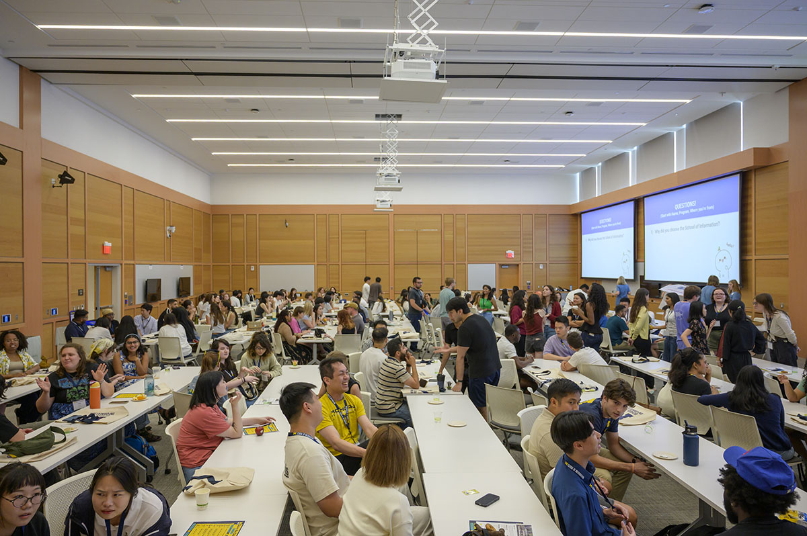
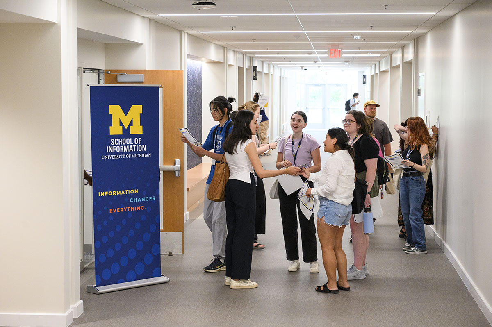

Why Build a Portfolio?
A professional portfolio gives you the power to demonstrate your skills, projects, and potential—it's like a highlight reel and toolbox, combined. Whether you're applying for a job, internship, or grad school, a portfolio provides proof of your expertise and tells your unique story. Employers love them, because portfolios turn your claims ("I'm a great designer!") into visible evidence ("See my projects, right here!").


What Should You Include?
- Your Best Work: Feature 3-6 standout projects related to information, design, data, programming, or whatever field you are targeting.
- Project Overviews: For each project, add a concise summary, your role, the tools and skills you used, and major outcomes or impact.
- Resume & About Section: Briefly introduce yourself and link your resume so visitors see both your journey and your achievements.
- Contact Information: Make it easy for recruiters or collaborators to reach out.
Getting Started: Quick Tips
- Choose Your Platform: UMSI recommends starting with Github Pages, Wix, Squarespace, or Google Sites.
- Accessibility: Use clear fonts, alt text for images, and color contrast that passes WAVE checks.
- Tell Your Story: Make your introduction personal yet professional.
- Get Feedback: Share your draft portfolio with the CDO.
Portfolio FAQ
Do I need coding experience?
No! Many platforms are drag-and-drop. But basic HTML/CSS gives you creative control.
How often should I update?
Whenever you finish a major project—at least once per semester.
Can I include group projects?
Absolutely! Just clarify your specific role and contribution.